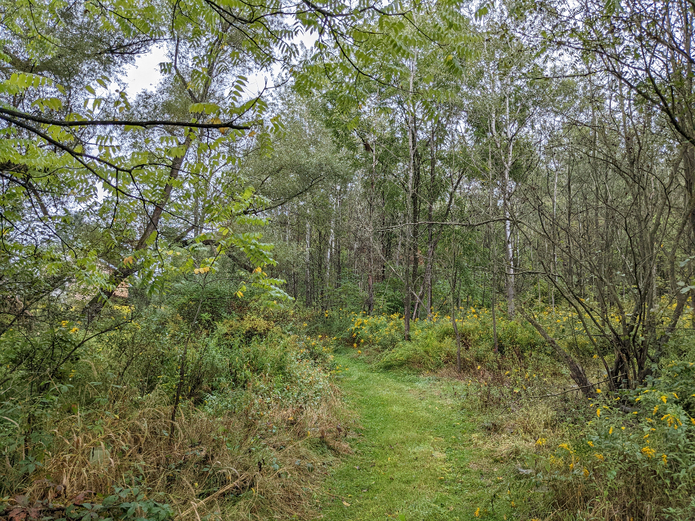

Concept
This project is seeking to enhance a section of a smaller stream, sometimes referred to as Green Grove Run, that joins the north-south Brush Mountain Run. It begins at its junction with the larger stream and continues upstream to the east, past the ChcioryLane barn house to the east edge of the yard, for a total of some 200 yeards. Half of the stream is near the ChicoryLane barn and a nearby utility area whereas the upstream half is adjacen to the House yard. Thus, this entire segment is adjacent to the most developed areas of ChicoryLane. A naturalizied border of some 20 feet is on the House side (north) and a natural steep bank and hillside on the south side. From the barn downstream, a 50-foot flood plane with numerous introduced native shrubs is on the north side and an old Aspen grove on the south.

The stream is the primary natural feature of the area. Notable species include a sizeable stand of Aspen trees, a patch of Reed Canary Grass (undesirable), numerous Elderberry and Viberna shrubs, epecially Cranberry vibrunum, a stream crossing, a small second grove of Aspens with Scillia and Daffiodils, and large patches of Comfrey and deep maroon native Bergamot. This stream also shares the largest and oldest Crack Willow with the North Riparian stream. The main focus of the project is enhancement through increasing seleced nativw species, reducing less desirable or invasive ones, and introduce several complementary new species not currently found in this area.

Steps
- Select a site
The Riparian section of stream beginning at the junction with Riparian North and extending eastward adjacent to the barn and house and ending with the far edge of the yard
- Record it
- Images (project early )
- Plant Species
- Inventory wildlife (fish, birds, insects) in or using the stream
- Base Map
- Inventory and map vegetation in designated sites of the riparian area on each streambank
- Consider and Plan changes
- Replace invasive non-native plants with natives and to control regrowth by cutting and herbicides
- Plant Palettes
- Species reductions
- Honeysuckle, Autumn Olive, Reed Canary Grass, Walnuts
- Species additions
- Various shrubs, especially in flood plain below barn, including Alder, Elder, Dogwoods, and Viburna.
- Planting Map
- Implement
- Assess
- Narrative
- Data
- Notes